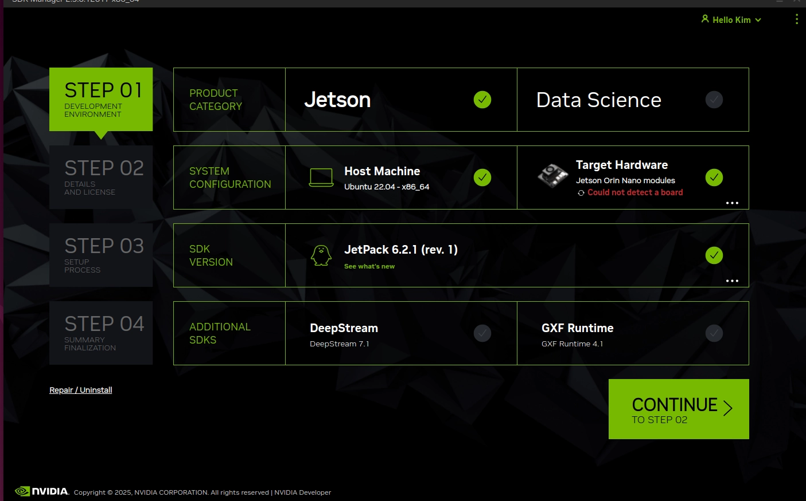
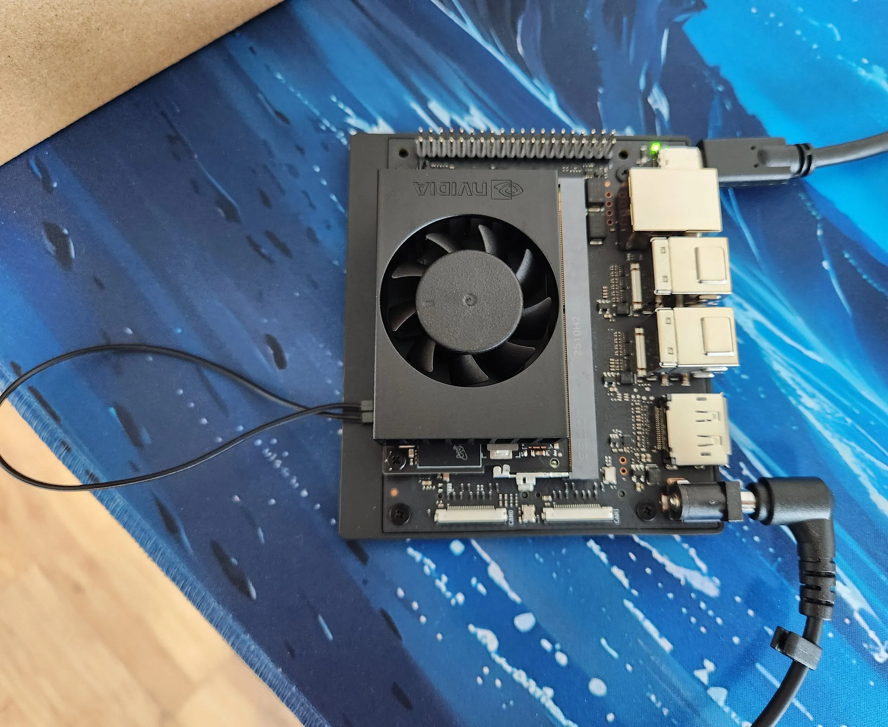
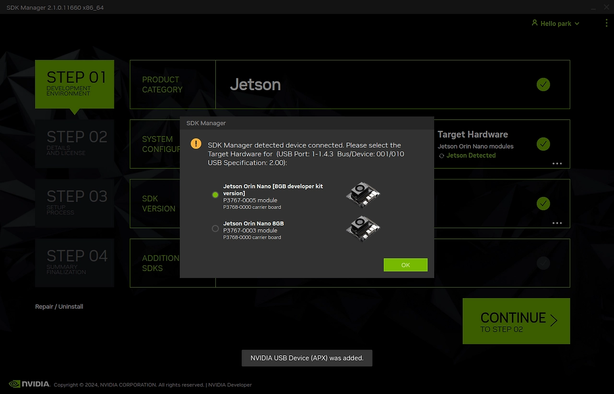
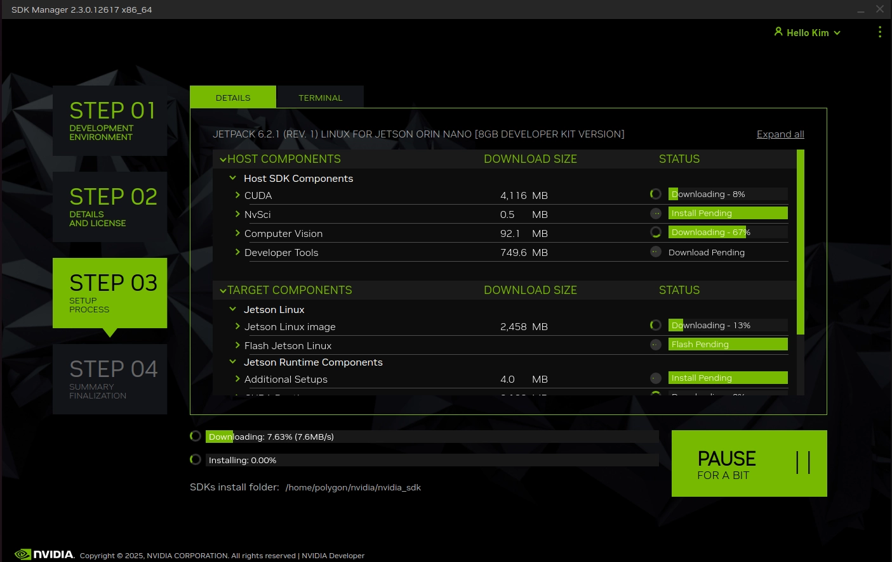
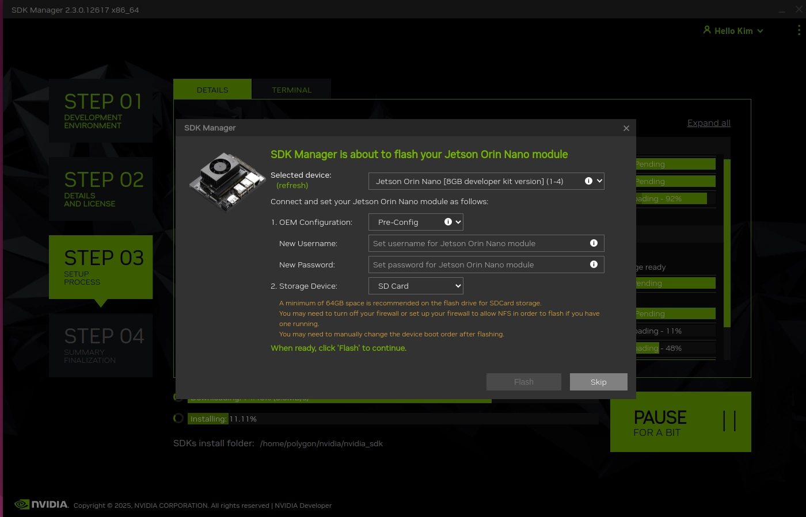
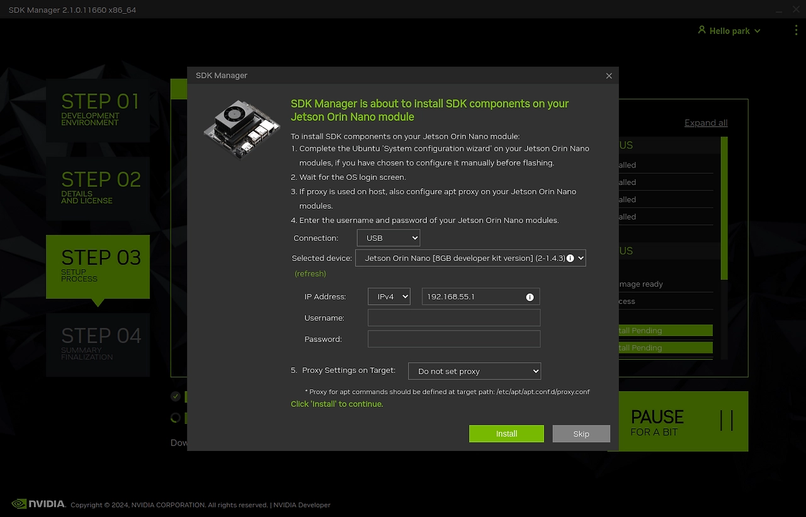
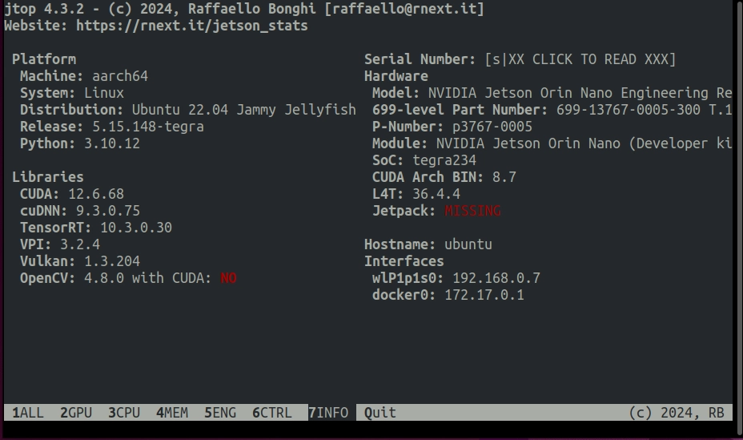

Nvidia SDK Manager에서 Ubuntu .deb 다운로드
https://developer.nvidia.com/sdk-manager
SDK Manager
An end-to-end development environment setup solution for DRIVE, Jetson, and more. SDKs.
developer.nvidia.com
cd ~/Downloads
sudo apt install ./sdkmanager_2.3.0-12617_amd64.deb
아래와 같은 경고문구가 나올 수도 있는데 메시지 권한 문제로 나타나며, 권한이 없어서 root 권한으로 진행했다는 의미로 무시해도 됨
N: Download is performed unsandboxed as root as file '/home/polygon/Downloads/sdkmanager_2.3.0-12617_amd64.deb' couldn't be accessed by user '_apt'. - pkgAcquire::Run (13: Permission denied)sdk manager 실행
sdkmanager
Target Hardware를 Jetson Orin Nano modules로 변경

1. Jetson Orin Nano에 SSD 연결
2. 암암 점퍼 케이블로 FC REC와 GND 연결
3. Jetson Orin Nano와 노트북 연결
4. Jetson Orin Nano 전원 어댑터 연결

연결 시 아래와 같은 창이 뜨는데 developer kit 선택

Accept하고 CONTINUE 누르면 폴더 만든다는 문구가 나오고, 진행시키면 설치가 시작됨

Downloading 게이지가 80%쯤 찼을 때 아래와 같은 창이 열리는데 username과 password를 입력하고 Storage Device도 맞게 선택

Installing 게이지가 20%쯤 찼을 때 아래와 같은 창이 열리는데 확인 후 Install 해주면 됨

설치완료 후 모니터에 Jetson Orin Nano를 연결하고 로그인하며 설치 마무리
https://github.com/rbonghi/jetson_stats
GitHub - rbonghi/jetson_stats: ? Simple package for monitoring and control your NVIDIA Jetson [Orin, Xavier, Nano, TX] series
? Simple package for monitoring and control your NVIDIA Jetson [Orin, Xavier, Nano, TX] series - rbonghi/jetson_stats
github.com
sudo apt update
sudo apt install python3-pip -y
sudo pip3 install -U jetson-stats
sudo reboot
jtop
- 만약 CUDA와 TensorRT 등이 MISSING이라면 아래 명령 실행 (시간 조금 걸림)
sudo apt update
sudo apt install nvidia-jetpack
- 위 사진에서 Jetpack이 MISSING으로 표시되면 아래 명령 실행
cat /etc/nv_tegra_release
아래와 같은 출력이 나온다면 Jetpack이 잘 설치된 것이니 걱정하지 않아도 됨
# R36 (release), REVISION: 4.4, GCID: 41062509, BOARD: generic, EABI: aarch64, DATE: Mon Jun 16 16:07:13 UTC 2025
# KERNEL_VARIANT: oot
TARGET_USERSPACE_LIB_DIR=nvidia
TARGET_USERSPACE_LIB_DIR_PATH=usr/lib/aarch64-linux-gnu/nvidia